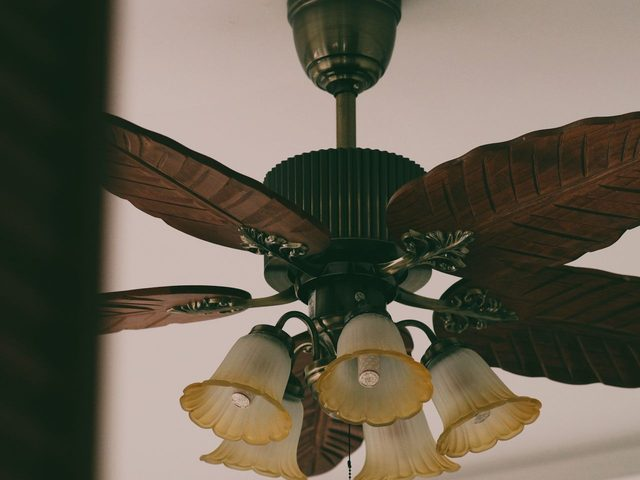
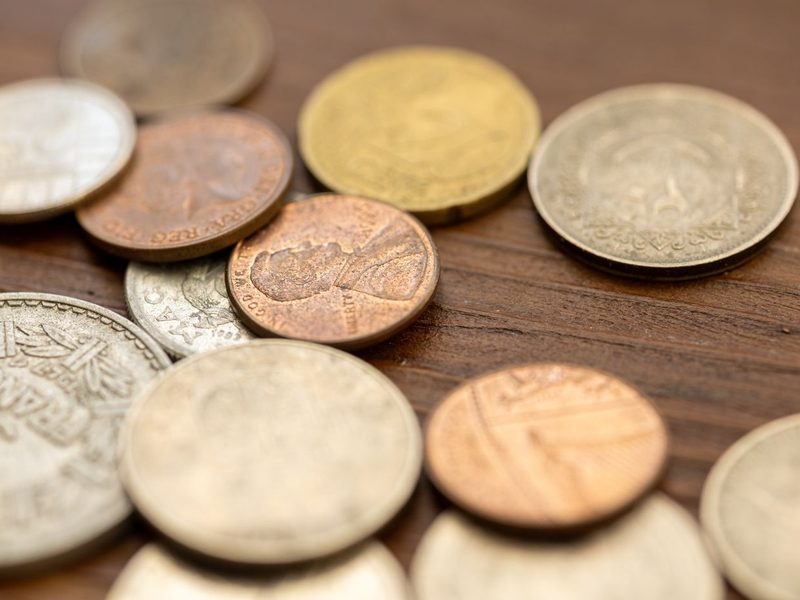
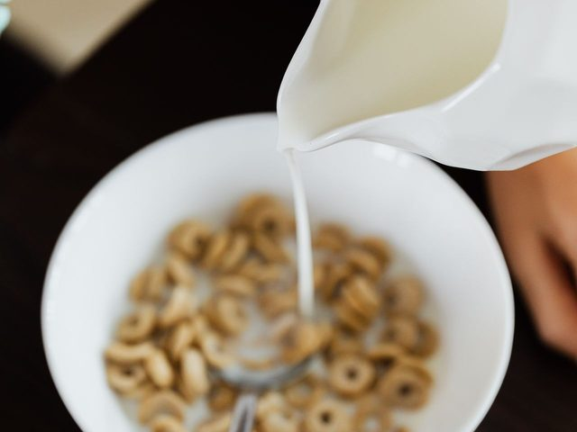
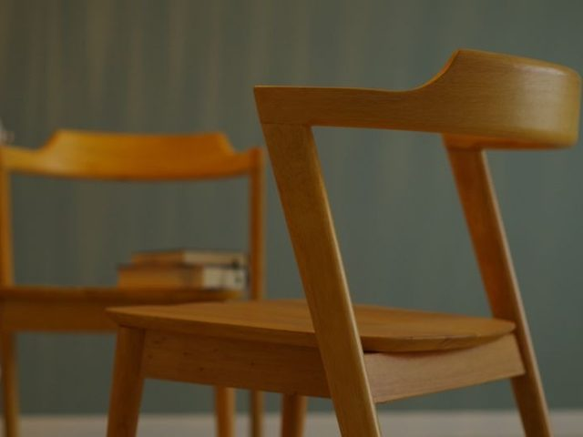
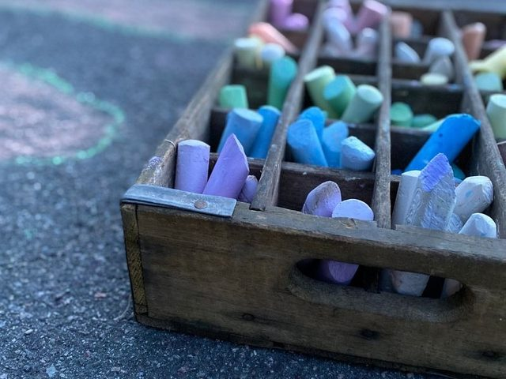
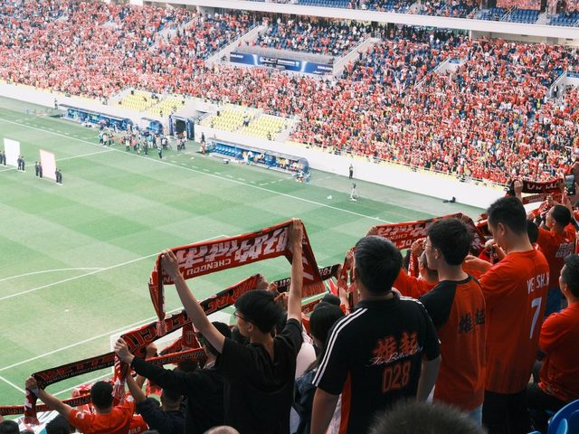
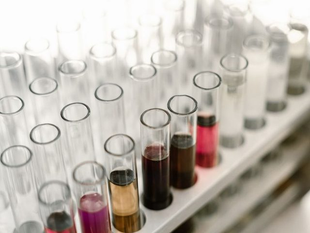
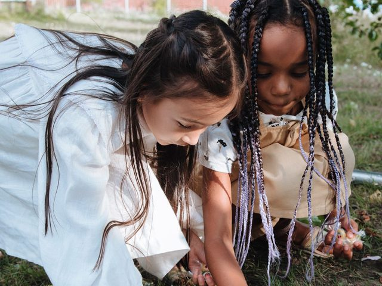

UNIT 9 · VOCABULARY
C 開頭（二）
C-II
38 個單字聽・唸・用
本單元單字一覽
WORD UP「C-II」的 38 個字（CD 到 China）。紅色＝要複習，藍色標籤＝WORD UP 標熟記、還要在這裡考對。
CDceilingcelebratecell phonecentcentercentimetercentralcenturycerealcertaincertainlychairchairmanchalkchancechangechannelchaptercharacterchargechartchasecheapcheatcheckcheercheesechemicalchesschickenchiefchildchildhoodchildishchildlikechinChina
每個字都有 🔊，先聽發音、跟著唸，再看例句。
單字 1–4
CD
光碟；CDn.
Dad still keeps his old CDs.
爸爸還留著他的舊 CD。
爸爸還留著他的舊 CD。

ceiling
天花板n.
There is a fan on the ceiling.
天花板上有一台電扇。
天花板上有一台電扇。

celebrate
慶祝v.
We celebrated Grandma's birthday at home.
我們在家幫奶奶慶生。
我們在家幫奶奶慶生。

cell phone
手機n.
Please turn off your cell phone in class.
上課請關手機。
上課請關手機。
單字 5–8

cent
分（貨幣單位）n.
This pencil costs fifty cents.
這枝鉛筆五毛錢。
這枝鉛筆五毛錢。
🎯
center
中心n.
There is a fountain in the center of the park.
公園中央有一座噴水池。
公園中央有一座噴水池。

centimeter
公分n.
The ruler is thirty centimeters long.
這把尺三十公分長。
這把尺三十公分長。
central
中央的；主要的adj.
Taichung is in central Taiwan.
台中在台灣中部。
台中在台灣中部。
單字 9–12
🏛️
century
世紀；一百年n.
This temple is over a century old.
這座廟有一百多年歷史。
這座廟有一百多年歷史。

cereal
穀片；穀類n.
I eat cereal with milk for breakfast.
我早餐吃穀片加牛奶。
我早餐吃穀片加牛奶。
✔️
certain
確定的；某個adj.
Are you certain about the answer?
你確定答案嗎？
你確定答案嗎？
👌
certainly
當然；確實adv.
Can you help me? — Certainly!
你能幫我嗎？——當然！
你能幫我嗎？——當然！
單字 13–16

chair
椅子n.
Please sit on the chair.
請坐在椅子上。
請坐在椅子上。
🧑⚖️
chairman
主席；董事長n.
The chairman opened the meeting.
主席宣布會議開始。
主席宣布會議開始。

chalk
粉筆n.
The teacher needs a piece of chalk.
老師需要一支粉筆。
老師需要一支粉筆。
🍀
chance
機會n.
Give me another chance, please.
請再給我一次機會。
請再給我一次機會。
單字 17–20
change
改變；零錢v./n.
You have changed a lot.
你變了好多。
你變了好多。

channel
頻道n.
Which channel is the game on?
比賽在哪一台？
比賽在哪一台？
chapter
（書的）章n.
Please read Chapter 3 tonight.
今晚請讀第三章。
今晚請讀第三章。

character
角色；性格；（中文）字n.
Who is your favorite character in the movie?
電影裡你最喜歡哪個角色？
電影裡你最喜歡哪個角色？
單字 21–24

charge
收費；充電；費用v./n.
I need to charge my phone.
我需要幫手機充電。
我需要幫手機充電。
chart
圖表n.
Look at the chart on page 10.
看第 10 頁的圖表。
看第 10 頁的圖表。
chase
追趕v.
The dog chased the cat up the tree.
狗把貓追到樹上。
狗把貓追到樹上。
cheap
便宜的adj.
These shoes are cheap but nice.
這雙鞋便宜又好看。
這雙鞋便宜又好看。
單字 25–28
🙊
cheat
作弊；欺騙v.
Never cheat on a test.
考試絕對不要作弊。
考試絕對不要作弊。

check
檢查；支票；帳單v./n.
Check your answers before you hand in the test.
交卷前檢查你的答案。
交卷前檢查你的答案。

cheer
歡呼；鼓勵v.
Cheer up! You can do better next time.
振作起來！下次可以做得更好。
振作起來！下次可以做得更好。

cheese
起司n.
I like cheese on my pizza.
我喜歡披薩上有起司。
我喜歡披薩上有起司。
單字 29–32

chemical
化學的；化學物質adj./n.
Don't touch those chemicals.
不要碰那些化學藥品。
不要碰那些化學藥品。

chess
西洋棋n.
Grandpa taught me to play chess.
爺爺教我下西洋棋。
爺爺教我下西洋棋。

chicken
雞；雞肉n.
We had fried chicken for dinner.
我們晚餐吃炸雞。
我們晚餐吃炸雞。
👨🍳
chief
主要的；首領adj./n.
The chief cook is very busy.
主廚很忙。
主廚很忙。
單字 33–36
child
小孩n.
Every child loves stories.
每個小孩都喜歡故事。
每個小孩都喜歡故事。

childhood
童年n.
I had a happy childhood.
我有個快樂的童年。
我有個快樂的童年。

childish
幼稚的adj.
Stop being so childish!
別那麼幼稚！
別那麼幼稚！
childlike
天真的；像孩子般的adj.
Grandpa has a childlike smile.
爺爺有像孩子般天真的笑容。
爺爺有像孩子般天真的笑容。
單字 37–38

chin
下巴n.
He rested his chin on his hand.
他用手托著下巴。
他用手托著下巴。

China
中國n.
The Great Wall is in China.
長城在中國。
長城在中國。
容易搞混的字
| 字 | 用法 | 例子 |
|---|---|---|
| childish / childlike | 幼稚的（負面）／ 天真的（正面） | childish behavior ／ a childlike heart |
| cheap / expensive | 便宜的 ／ 貴的 | a cheap toy ／ an expensive car |
| center / central | 中心（名詞）／ 中央的（形容詞） | the center of the city ／ central Taiwan |
| certain / certainly | 確定的（形容詞）／ 當然（副詞） | I'm certain. ／ Certainly! |
| cheat / cheer | 作弊 ／ 歡呼 | cheat on a test ／ cheer for the team |
常考片語
| 說法 | 中文 | 例子 |
|---|---|---|
| cheer up | 振作起來 | Cheer up! |
| cheer for + 人／隊 | 替…加油 | cheer for our team |
| have a chance to V | 有機會做… | have a chance to travel |
| in the center of | 在…的中央 | in the center of the room |
| free of charge | 免費 | The museum is free of charge. |
| a piece of chalk | 一支粉筆 | two pieces of chalk |
child 的複數是 children，不是 childs。
快問快答：中文 → 英文
1光碟；CDCD
2慶祝celebrate
3分（貨幣單位）cent
4公分centimeter
5世紀；一百年century
6確定的；某個certain
7椅子chair
8粉筆chalk
快問快答：英文 → 中文
1change改變；零錢
2chapter（書的）章
3charge收費；充電；費用
4chase追趕
5cheat作弊；欺騙
6cheer歡呼；鼓勵
7chemical化學的；化學物質
8chicken雞；雞肉
學完了！接下來
複習方法
review
- 回到「📗 單字卡」，按「遮中文」自己考自己
- 再按「遮英文」，看中文說出英文
- 每個例句跟著 🔊 唸一次
準備好了
- 按右上角「📝 前往測驗」
- 測驗錯的題目要訂正到全對
- 訂正完成補送 1 點